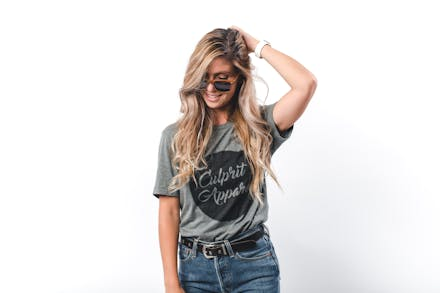

star
8.5Laura Martínez
Plato: Paella de Mariscos
"La paella estaba increíble, con mariscos frescos y un sabor auténtico. El ambiente del restaurante me hizo sentir como si estuviera en España. Definitivamente volveré."
star
10Carlos Rodríguez
Plato: Pulpo a la Gallega
"El pulpo era muy tierno y sabroso. Los sabores tradicionales estaban muy bien logrados. Un lugar perfecto para disfrutar de la auténtica cocina española."
star
7María López
Plato: Ensalada de Tomate y Ventresca
"Una ensalada fresca y deliciosa, perfecta para comenzar la comida. Los ingredientes eran de alta calidad y el servicio fue impecable."
star
8Javier García
Plato: Ensalada de Pimientos Asados y Bacalao
"La ensalada tenía un sabor muy auténtico y fresco. El bacalao estaba perfectamente desalado. Una experiencia gastronómica excelente."

star
8.1Ana González
Plato: Ensalada de Espinacas, Nueces y Queso de Cabra
"Me encantó la combinación de sabores y texturas en esta ensalada. Fue una opción ligera y sabrosa que disfruté muchísimo."

star
9.5Fernando Pérez
Plato: Paella de Mariscos
"La mejor paella que he probado fuera de España. Los mariscos eran frescos y el arroz estaba perfectamente cocido. Sin duda, volveré pronto."
star
7.9Isabel Sánchez
Plato: Pulpo a la Gallega
"El pulpo a la gallega estaba espectacular, con la cantidad justa de pimentón. La atención del personal fue excelente. Muy recomendable."
star
9Luis Fernández
Plato: Ensalada de Tomate y Ventresca
"La ensalada de tomate y ventresca fue una sorpresa deliciosa. Ingredientes frescos y un aderezo perfecto. Una gran elección para empezar la comida."
star
10Patricia Ramírez
Plato: Ensalada de Pimientos Asados y Bacalao
"Una ensalada rica en sabores, con pimientos perfectamente asados y bacalao desmenuzado."
star
9.6